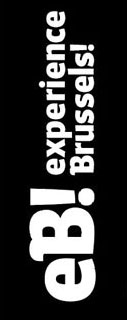

Expérience.Brussels propose une approche plus ludique et créative pour découvrir ou redécouvrir Bruxelles. Projections, écrans, questionnaires interactifs, tous les moyens sont bons pour apprendre. Ici nous allons nous pencher sur la projection sur maquette : outil créatif et adaptatif comme support d’exposé.
L’expo dispose d’une salle avec une dizaines de projecteurs, d’une vidéo et d’une maquette pour expliquer la naissance de Bruxelles. Ici, les grands moyens sont utilisés pour une simple présentation. On peut imaginer qu’avec un simple projecteur, une salle vide et de la créativité, on peut faire la même chose ou même aller plus loin et imaginer que les smartphones pourront projeter une image.
De plus en plus, Bruxelles réfléchit sur des moyens plus ludiques au service de l’apprentissage mais la mise en place de ces solutions coûteuses est fastidieuse. Pour autant, est-ce que la technologie peut devenir un outil principal de partage et d'éducation ?
Oui. La technologie fait de plus en plus partie de notre vie et est en constante évolution. Comme je l’ai évoqué plus tôt, imaginons que nos smartphones puissent projeter une image, dans l'hypothèse où tout le monde en possède un. La notions de partage des informations changerait totalement l’horizon; en effet, au lieu de se retrouver aspiré par les écrans, on se retrouve autour de ceux-ci. Mais à l'heure actuelle, quels sont les moyens pour aller dans ce sens ?
Tout simplement diffuser un contenu sur un écran externe. Aujourd’hui, petit à petit les écoles, les gares et les centres commerciaux disposent d’écrans interactifs. Les seuls freins actuels sont: la technologie, le coût de la mise en place, la formation adéquate des personnes à l’entretien du contenu. C’est pour répondre à ces défis que je suis actuellement en formation en web développement.
Bien sûr, cela n’est "qu’une bride" des moyens mis à notre disposition. Tous les moyens sont bons pour partager et faire découvrir. Alors qu'est-ce qu’on attend ?